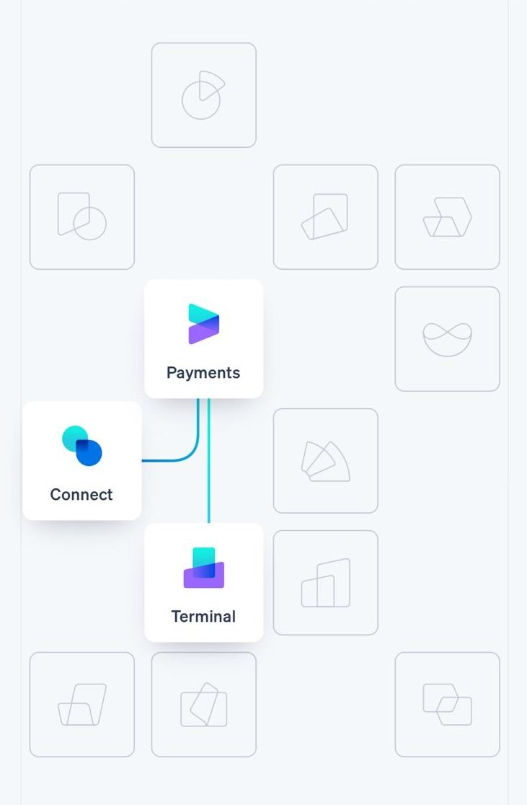
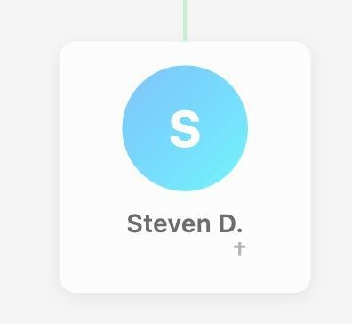
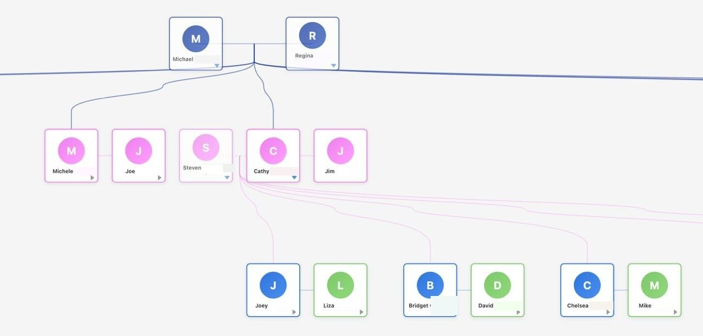
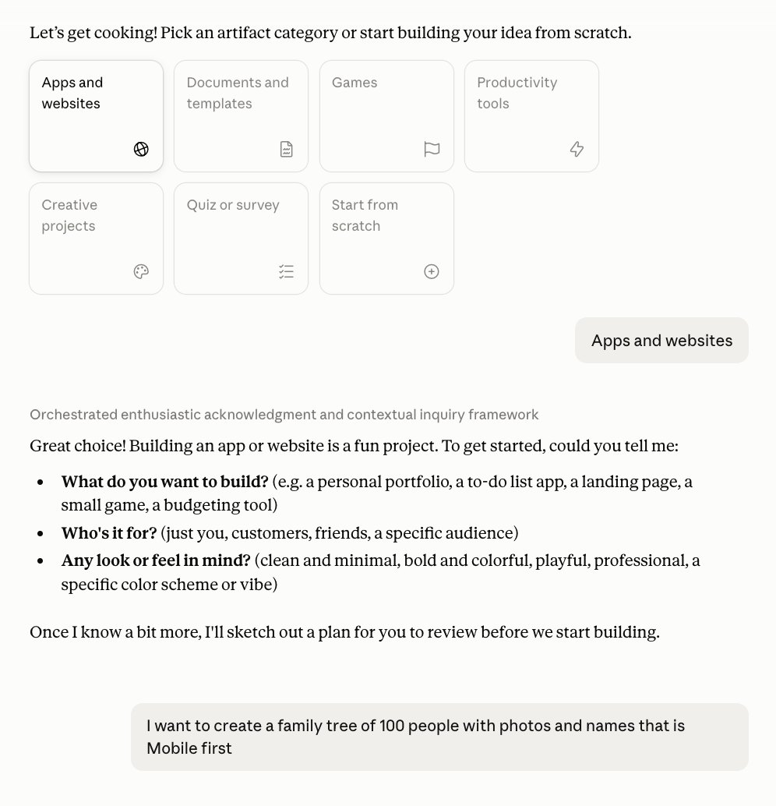
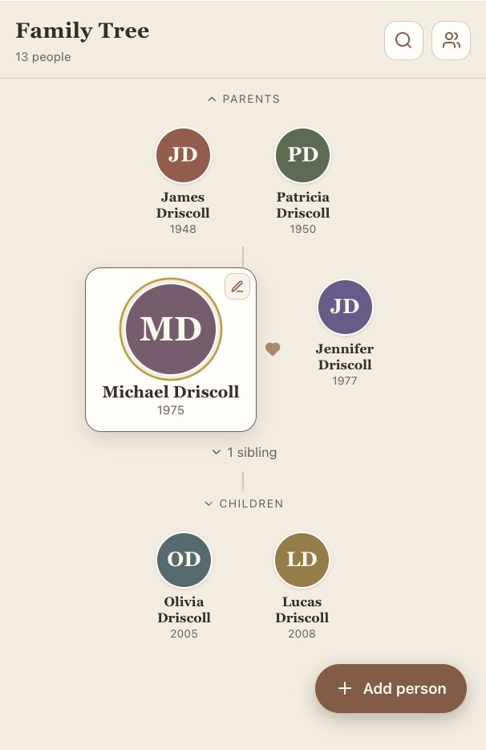

Two iterations
Why I built it
The problem
Our family has grown so big that the fourth-generation kids don't always know who belongs to who. So the idea got tossed around to put a family tree out at our annual Christmas party, something everyone could gather around and use to see how they're all connected.
The solution
Instead of a paper tree, I decided to build a digital one. And because I also run the holiday party and its RSVPs, I planned an RSVP section for the future: the family tree and guest list, together in one place.
A potential product
I can see this being useful well beyond my family. Anyone who hosts an annual reunion has the same problem, so their kids, too, could learn about the relatives they're meeting, and never feel embarrassed about not knowing how they relate.
Christmas 2025: the first version
The first Driscmas came together for Christmas 2025. I hired a developer (a few hundred dollars) and provided the idea, names, photos and design direction. They built it in Cursor from that, and it was live in time for the holidays.
The design direction

I didn't write the code, but the look was mine to decide: a reference for the overall feel, the design of the person cards, a color for each generation, and the holiday mood I wanted.
I started with Stripe's website. I love how their little cards float on a soft background, joined by thin lines: calm, clean, and easy to follow.
Then we agreed on a single "person box" for everyone: a rounded white card, a soft gradient circle with the person's initial (a photo drops in when there is one), their name, and a small cross beside anyone we've lost.

Stacked together, those cards make the tree, generation by generation from top to bottom, with lines linking parents, partners, and children.

Each generation got its own color, so you can tell the different parts of the family apart at a glance.
And I added a set of Christmas colors, for warmth and a holiday feel.
We finished the app just in time for Christmas. The catch was that it only really worked on a computer, and I knew most of my family would want to pull it up on their phones. So the next version had to work well on a phone.
April 2026: I rebuilt it with Claude
A few months passed and I found some time to work on the mobile version. I also realized there were security issues. The names and password were not protected in a database and could be seen right there in the HTML code! So, I decided to rebuild it myself, this time with Claude.
1It started with one prompt
A simple prompt got me started. I just typed what I wanted, in plain words:
"I want to create a family tree of 100 people with photos and names that is Mobile first." My very first message

2The first prototype
Within minutes there was something real on screen: a small tree I could tap through. Claude added thirteen made-up people, with colored circles where the photos would go, and an "Add person" button.

3The plan
Before going further, Claude laid out a plan for us to work from:
- A card for each person with their photo and name, and if there's no photo, a colored circle with their initials instead.
- Tap anyone to bring them front and center, with their parents, partner, and children around them.
- A search to jump to anyone by name, which really matters once you pass a hundred people.
- Fill it with the real family. I brought in all 119 people from a spreadsheet I already had, sorted them into four generations with their colors, and worked out the tricky cases (like someone with a current and a former partner) so they'd look right on a phone.


4Finding anyone: search
With that many relatives, tapping through the tree only gets you so far, and search was actually Claude's idea, not mine. It brought it up early, and it turned out to be one of the handiest parts of the app: type a name, and it takes you straight there, with each result showing the generation.

5A Cloudflare database
To make it safe and shareable, I hired an engineer to move the family's names into a database on Cloudflare, with the photos stored there too, so everyone opens the same tree.
6A secret password
And the password now lives in a secret on Cloudflare, not in the page's code, so the family's details only load once someone's signed in.
7Live again
The site is hosted on Cloudflare, which holds the database and photos, and I make updates using Claude and GitHub. I shared one link and one password with the family, and Driscmas was live again, this time secure and mobile friendly.